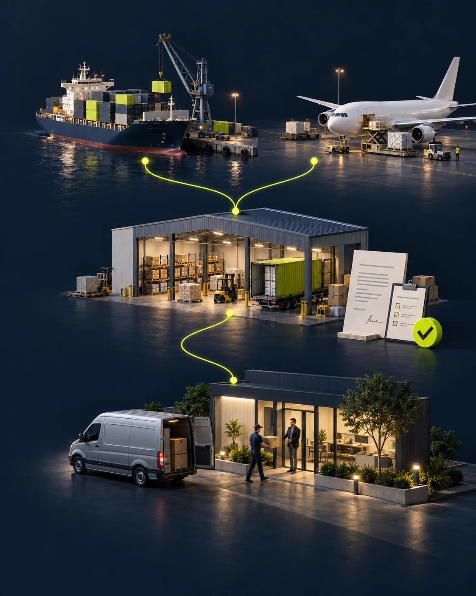

See what’s coming next.
Follow supplier purchases and incoming goods alongside available stock and reserved quantities.
IMPORT & DISTRIBUTION, CONNECTED
Connect the journey from purchasing and inbound shipments to inventory, B2B sales and customer delivery. One environment for your import and distribution operations.
See it in motionAn interactive story. No sign-up needed.

From incoming goods.
To outgoing possibilities.
01 / A LITTLE LESS CHAOS
THE IKUGO WAYPurchasing · Import · Inbound shipments · Inventory · B2B sales · Fulfilment · Documents · Delivery
IKUGO connects the work before stock reaches your shelves with everything that happens after a customer orders. Keep supplier purchases, incoming goods, reservations, documents and delivery information in the same operational flow.
Follow supplier purchases and incoming goods alongside available stock and reserved quantities.
Bring received goods into stock, then carry the order through invoicing, packing and dispatch.
Let B2B buyers explore available products and place orders through a dedicated portal.
02 / TAKE IT FOR A SPIN
INTERACTIVE PRODUCT STORYThe goods have arrived and been received into stock. Explore the next part of their journey: a B2B order, its reservation, preparation and dispatch to the customer.
Arc cabinet handle · Satin nickel
See what’s on the shelf and what’s already reserved. Start every customer conversation with a clear picture.
Illustrative workflow with fictional products and quantities.
Explore the idea. Keep your real business private.
03 / ONE HOME FOR YOUR OPERATION
BUILT AROUND YOUR DAYFor importers, distributors and product businesses managing the journey from supplier purchasing to their B2B customers.
Manage supplier purchase orders, item quantities and incoming shipments. Keep shipment references and import documents together, follow delivery stages and record receipt into stock. Relate incoming goods to the shortages affecting customer orders.
Products, SKUs, reservations and stock counts. Understand what you have and what is available to sell.
A dedicated B2B Customer Portal for browsing products and prices, placing orders and returning to order history.
Bring order details, packing lists and shipment references together, including orders fulfilled in parts. Follow delivery status when a supported carrier integration is configured.
Keep import documents with incoming shipments. Create invoices and packing documents for customer orders, with the relevant quantities and references together.
04 / B2B CUSTOMER PORTAL
YOUR CUSTOMER’S SIDE OF THE FLOWGive business buyers a direct connection to your operation.
The B2B Customer Portal brings product availability, ordering, order progress and shared invoices into one customer space. From checking what’s available to returning for their documents, buyers stay connected to the same import-to-customer flow.
Browse the product catalogue, available quantities and the prices assigned to the customer’s account.
Submit B2B orders, review their details and follow their recorded status from the customer portal.
Return to order history and download the invoices shared with the customer’s account.
05 / A CONVERSATION WITH YOUR BUSINESS
Ask the built-in AI assistant about supplier purchases, incoming deliveries, stock, order readiness and recorded packing details. Changes to order status require your approval.
See which orders have the stock they need, and which are still waiting on missing items.
Examples translated for this presentation. These are sample texts, not live AI responses. Shipment answers depend on saved records and available tracking information.
A FEW GOOD QUESTIONS
IKUGO is an operations platform for import and distribution businesses. It connects supplier purchases and inbound shipments with inventory, B2B sales, reservations, fulfilment, documents and customer delivery.
This is an interactive product presentation. The examples are fictional and explain the workflow without giving access to a live application or business records.
Yes. Business buyers can view product availability and their prices, place orders, follow order status and access shared invoices. The portal connects the customer’s experience with the wider import and distribution workflow.
Yes. Partial fulfilment lets you work with quantities already allocated to invoices and those still outstanding, while keeping them linked to the original order.
FROM SUPPLIER TO CUSTOMER.
One connected flow.
From the purchase to your customer.